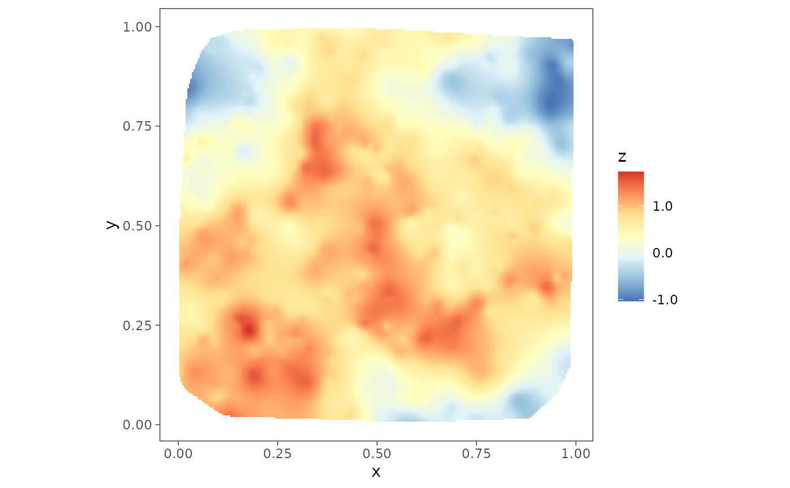
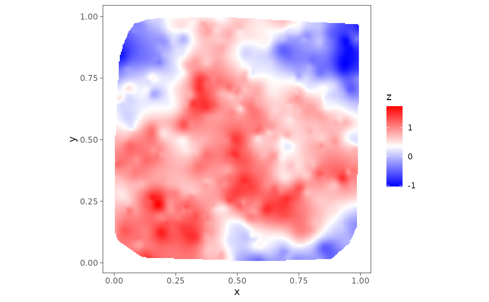

Make a surface plot
Arguments
- tab
a data-frame containing spatial co-ordinates and the variable to plot
- coords_name
name of the two columns that contains the co-ordinates of the points
- var_name
name of the column containing the variable to be plotted
- h
integer; (optional) controls smoothness of the spatial interpolation as appearing in the
MBA::mba.surf()function. Default is 8.- col.pal
Optional; color palette, preferably divergent, use
colorRampPalettefunction fromgrDevices. Default is 'RdYlBu'.- mark_points
Logical; if
TRUE, the input points are marked. Default isFALSE.
Author
Soumyakanti Pan span18@ucla.edu,
Sudipto Banerjee sudipto@ucla.edu
Examples
data(simGaussian)
plot1 <- surfaceplot(simGaussian, coords_name = c("s1", "s2"),
var_name = "z_true")
plot1

# try your favourite color palette
col.br <- colorRampPalette(c("blue", "white", "red"))
col.br.pal <- col.br(100)
plot2 <- surfaceplot(simGaussian, coords_name = c("s1", "s2"),
var_name = "z_true", col.pal = col.br.pal)
plot2
